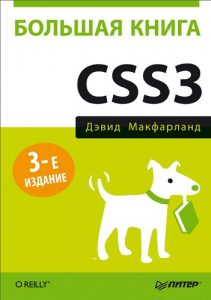
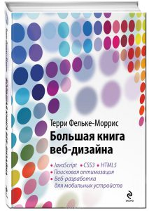

Начало данной книги посвящено рассмотрению базовых принципов работы интернета и веб-сайтов. В ней в популярной форме преподносятся все основы современного веб-дизайна, рассматриваются техники создания сложных интерактивных веб-страниц, работы с графикой и таблицами стилей. Представляя собой исчерпывающий гайд по современным веб-стандартам. Эта книга будет полезна веб-разработчику любого уровня.
Поистине, незаменимое издание, которое должно быть настольной книгой всех современных веб-дизайнеров. Одновременно с появлением стандарта CSS3 особенно остро встали проблемы кроссбраузерности и адаптивности сайтов. Богатая примерами и практическими советами, данная книга позволит веб-дизайнеру выйти на совершенно новый уровень разработки веб-сайтов, которые одинаково быстро работают в разных браузерах и выглядят привлекательно как с ПК, так и с мобильных устройств.
Одно из новейших изданий (книга опубликована 12 января 2017 года), освещающее все основные аспекты, необходимые для овладения инновационными технологиями веб-разработки. Книга достаточно полно охватывает тему верстки на HTML5 с использованием новых возможностей стандарта, каскадные таблицы стилей, знакомит с языком JavaScript и учит создавать с его помощью сценарии, превращающие сайт в интерактивное многофункциональное веб-приложение. Последние главы издания посвящены электронной коммерции и поисковой оптимизаци
